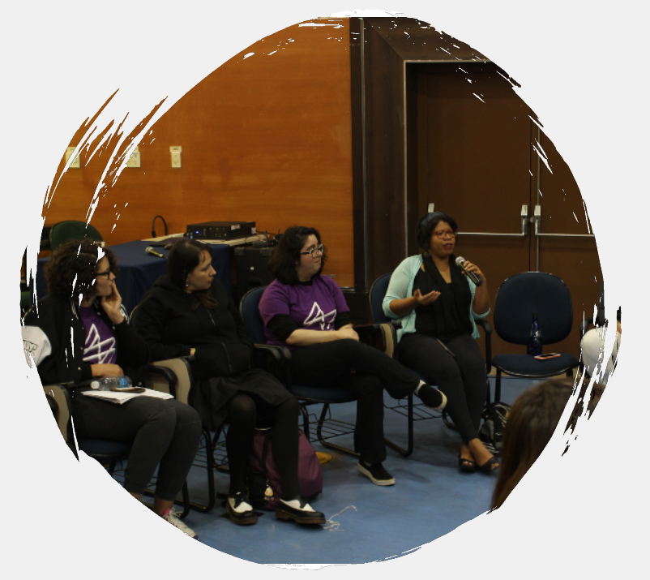

Durante a graduação, pude participar de diversos projetos e atividades extracurriculares, pois acredito que a Universidade de São Paulo tem muitas oportunidades a oferecer que vão além da graduação. Dentre eles, o foi um dos mais importantes para mim, pois lá trabalhei em diversos projetos, além da . Participei, também, da organização da nona edição da , como coordenadora do setor de Comunicação e Artes e staff, e da primeira edição do , como staff. Além disso, realizei atividades no Setor Acadêmico do , juntamente a uma monitoria voluntária da disciplina de Cálculo 1. Vale lembrar, também, que em 2019 descobri um novo grande amor: participar de .
PET-SI
O Programa de Educação Tutorial (PET) é um programa do Governo Federal que conta com 12 bolsistas, os quais realizam projetos voltados para os três pilares da graduação: ensino, pesquisa e extensão. O PET Sistemas de Informação USP (PET-SI) possui, atualmente, 3 grandes projetos: , e . Todos os bolsistas devem fazer, também, uma , e eu escolhi me aprofundar numa área de meu interesse: a Computação Musical.
Ademais dos já citados, o PET-SI possui, também, outros projetos menores, como o podcast "Fala, Coruja!", no qual entrevistamos professores e alunos do curso de Sistemas de Informação sobre assuntos que vão além da graduação. Temos, também, o jornal Coruja Informa, no qual postamos matérias de assuntos variados de nosso interesse, que possuem alguma relação com a computação. você pode encontrar a minha matéria sobre a Inteligência Artificial na medicina. Por fim, ao longo do ano, participei da confecção de material didático para um Curso de Python.
Desde quando entrei no PET-SI como bolsista, em fevereiro de 2019, pude aprender lições muito valiosas junto aos outros petianos. Lá, trabalhamos muito nossa habilidade de cooperação em grupo, proatividade, respeito mútuo e responsabilidade. Exercitamos, também, nosso pensamento crítico nas tomadas de decisão em conjunto, e pensamento estratégico para conciliar todas as tarefas externas ao projeto aos objetivos que queremos atingir. Acesse o para mais detalhes sobre o grupo e nossos projetos.
COMPETEC
O COMPETEC é um dos projetos de extensão do , e tem como objetivo complementar o ensino da programação a alunos de ETECs que fazem cursos relacionados à computação. No início de cada ano, abrimos 4 turmas com aproximadamente 25 alunos em cada, tanto do primeiro módulo, que é o nosso foco, quanto de módulos mais avançados. Temos sessões semanais aos sábados pela manhã, nas quais damos uma aula sobre um conceito específico de programação e, em seguida, aplicamos a dinâmica de Dojo para resolver um desafio de programação.
Este projeto ensina os integrantes a ensinar. Mesmo tendo dado poucas aulas, precisei sair da minha zona de conforto para aprimorar minhas habilidades de falar em púlico, e em me comunicar com pessoas que vivem numa fase da vida diferente da minha, que vêm de um contexto diferente, e que possuem maneiras diferentes de entender conceitos. Para saber mais sobre o projeto, acesse o .
BXCOMP
o BXCOMP, projeto do voltado para a graduação, é uma maratona de programação para calouros do curso de SI que ocorre anualmente, e tem o objetivo de contribuir com a sua boa formação ao oferecer um ambiente lúdico de resolução de desafios de programação. Lá, os calouros têm a oportunidade de aplicar seu o conteúdo do primeiro ano do curso, desenvolvendo também a capacidade de trabalhar em equipe e sob pressão. Todos os desafios são elaborados pelos membros do grupo PET-SI, e a organização é realizada com o apoio de docentes do curso, do setor de informática da EACH-USP e de patrocinadores.
Desde a minha entrada no , o BXCOMP sempre me pareceu o maior dos desafios. De fato, durante o segundo semestre, foi o projeto que mais exigiu foco, dedicação e organização para que tudo ocorresse como planejado. Como nem tudo é perfeito, também exigiu muito jogo de cintura para lidar com os imprevistos e manter o controle da situação. Precisei, também, exercitar meu raciocínio para criar desafios de programação que se encaixassem no nível dos calouros: ao mesmo tempo que precisavam ser desafiadores, deveriam ser solucionáveis com apenas o conhecimento do primeiro ano. Para saber mais sobre o projeto, acesse o .
SSI
Em 2019, fui a Coordenadora do Setor de Comunicação e Artes da nona edição da Semana de Sistemas de Informação. Durante este projeto, precisei sair muito de minha zona de conforto pois, além de estar numa área sobre a qual eu não tinha tanta familiaridade, assumi uma posição de liderança, algo com que não estava acostumada. No fim, a experiência foi extremamente valiosa, pois além de desenvolver habilidades em edição de imagens e gestão de redes sociais, aprendi a dividir tarefas numa equipe, estabelecer metas, controlar prazos e, é claro, ter jogo de cintura para lidar com os perrengues e fazer o evento acontecer. Durante a semana do evento, fui staff todos os dias e ajudei em diversas comissões. Hoje em dia, sou a Coordenadora do novo Setor de Comunicação e Sites da décima edição da SSI.
Hackathons
A primeira Hackathon da qual participei foi o Interhack, criado pelo grupo de extensão USPCodeLab, e provavelmente a maior hackathon universitária do país. O evento ocorreu simultaneamente nos 3 campi da USP que possuem cursos de computação (EACH, Butantã e São Carlos), e contou com a participação de mais de 30 equipes. O tema foi "melhorando a gestão universitária através da tecnologia", e o projeto do meu grupo foi o . Nele, criamos um modelo para prever quantas pessoas comeriam no bandejão da universidade com base num determinado cardápio, e usaríamos essa informação para calcular a quantidade de alimento que deveria ser preparada a cada dia, para minimizar o desperdício. No fim, nosso projeto foi selecionado como menção honrosa para a Final.
O tema da Final do Interhack, por sua vez, foi "Edutech". O projeto do meu grupo foi o , uma plataforma de compartilhamento de resumos escritos. Apesar de não ter ganhado o pódio, o EmSuma será utilizado como projeto base no de São Carlos no segundo semestre de 2020.
Por fim, participei, também, da primeira edição do Hackanets, feita numa parceria da EACH com a Netshoes e a Magazine Luiza. Em nosso projeto, o FireShoes, focamos na experiência de usuário e fizemos uma plataforma que auxilia os curadores a avaliar as informações dos produtos que entrarão no site da empresa. Além disso, fizemos um modelo de classificação para acelerar seu trabalho. No fim, nosso projeto ganhou o terceiro lugar.
SheHacks
O SheHacks 2019 foi a primeira edição de uma HackDay organizada de mulheres para mulheres. Nossa equipe é composta por universitárias que são apaixonadas por tecnologia e comunicação, e participam do grupo USPCodeLab Butantã (sediada no IME-USP), São Carlos (sediada no ICMC-USP) e USP Leste (sediada na EACH-USP), da Iniciativa Ada, e do . Nosso maior objetivo foi proporcionar um ambiente saudável e construtivo para que mais mulheres universitárias que têm interesse em tecnologia fossem incentivadas a participar de mais hackathons. O evento ocorreu na sede do Facebook em São Paulo, e mais alguns de nossos patrocinadores foram Microsoft, Google, Nubank, Cobli, PagSeguro, B2W e Neon. Para saber mais, acesse o .
GRACE
O GRACE, projeto cujo nome é um acrônimo para Garotas na Computação e Empreendedorismo, foi criado em 2017 com o objetivo de incentivar a participação feminina na computação. Aproximamos garotas já em idade escolar dessa área por meio de atividades de computação desplugada, em que ensinamos conceitos da computação sem utilizar computadores. Somente em 2019, atingimos mais de 80 alunas nas atividades feitas em visitas a escolas públicas.

Apesar de o nosso foco ser em trazer mais garotas para a área da computação, entendemos como é importante, também, incentivar a permanência das estudantes dentro do curso de Sistemas de Informação. Por isso, ao longo do ano, também realizamos uma série de eventos internos para a discussão sobre este tema e para a divulgação do projeto.
Um exemplo foi a Roda de Conversa sobre ser mulher na computação, que aconteceu na Semana de Sistemas de Informação e reuniu diversas alunas e profissionais da área para discutir sobre o tema. Outro exemplo foi a realização de um Escape Room de divulgação para as alunas de todos os cursos da EACH, em que os grupos precisaram resolver enigmas que envolviam grandes mulheres na computação.
Para que todas e todos conhecessem o que fizemos em todas essas atividades em 2019, demos uma entrevista para o Jornal da EACH, unidade da USP na qual o GRACE se encontra. A matéria teve uma repercussão excelente nesse veículo e o GRACE ganhou espaço também no Jornal da USP e na página de notícias do Governo do Estado de São Paulo, o que deu uma visibilidade grande ao projeto. Acesse a matéria no Jornal da EACH, e a matéria no portal do Governo do Estado de SP. Para saber mais sobre o GRACE, acesse o .
Faço parte do GRACE desde o início de 2018, como voluntária, e durante 2019 trabalhei como bolsista pelo PET-SI. A cada visita que realizamos, e a cada garota que incentivamos a conhecer mais sobre a área, sinto mais vontade de ajudar a expandir cada vez mais o projeto, e por isso planejo continuar a trabalhar como voluntária pelos próximos anos.
IC em Computação Musical
Em março de 2019, iniciei meus estudos na área de Computação Musical e comecei um grupo de pesquisa sobre o tema, que reuniu 5 estudantes de graduação, 1 estudante de mestrado e 1 professor. Durante esse período, explorei diversas possibilidades de aplicação da computação na música, estudei sobre ferramentas, bibliotecas e técnicas de processamento de áudio, além de técnicas de análise multivariada e machine learning e, é claro, tópicos mais aprofundados em teoria musical. Meus projetos na área foram sobre a , e .
Durante minha pesquisa, conheci e entrei em contato com a iniciativa , um grupo internacional cujo principal objetivo é incentivar a participação feminina na área de retirada de informação em música (Music Information Retrieval - MIR). Participei por um semestre do , e fui mentorada em minha pesquisa remotamente pelo professor , do Ithaca College em Nova York.
O WiMIR possui uma parceria com o , que realiza uma conferência anual em diversos países do mundo. Em 2019, uma carta de autorrecomendação me ajudou a ganhar um auxílio financeiro da Comunidade do ISMIR para atender à vigésima edição do evento, em Delft, nos Países Baixos, apesar de infelizmente não ter conseguido comparecer por motivos financeiros.
DASI
Durante o segundo ano do curso, passei a fazer parte do Setor Acadêmico do Diretório Acadêmico de Sistemas de Informação (DASI). Lá, auxiliei na organização de palestras de profissionais da Microsoft e da Loggi sobre o mercado da área de TI, o DASI Convida. Minha maior participação, no entanto, foi com o Sufoco, projeto que visa aproximar os calouros e o/a monitor/a de Cálculo 1 para tirar dúvidas sobre a matéria e esclarecer conceitos, semanalmente em encontros de 2 horas. Como já citado, levei o Sufoco ao lado de uma monitoria voluntária de Cálculo 1, em que auxiliei a professora na elaboração de exercícios e na correção de provas e listas de exercícios.